其他
零基础搭一个角色：从新建到导出 VRM
窗口标题只写 VRoid Studio，没有版本号。搜索页上能看见一条 Steam 结果写着 VRoid Studio v1.0.1，另一条是 v0.14.0。口播说这次是新版本，语言只有日文和英文。全程用预设点选，没有进 Custom 画画。左下角穿黑外套的人是作者自己的虚拟形象，不是正在做的这个角色。数值只写那一帧能读到的。
进软件
先放一段做好的动作
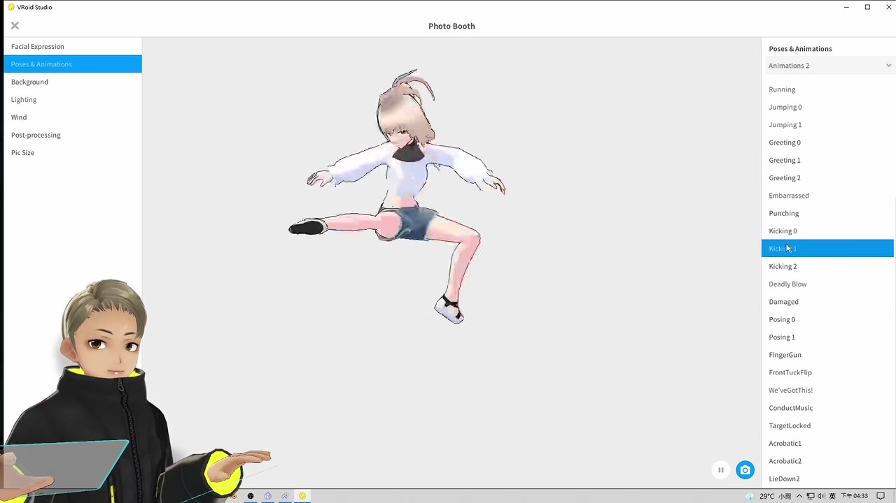
片头是已经做好的人：浅色长发、白短上衣、深色短裤、黑凉鞋，正在踢腿。左侧列表还有 Facial Expression、Background、Lighting、Wind、Post-processing、Pic Size。这一段只展示结果，做法在后面。
从官网进来
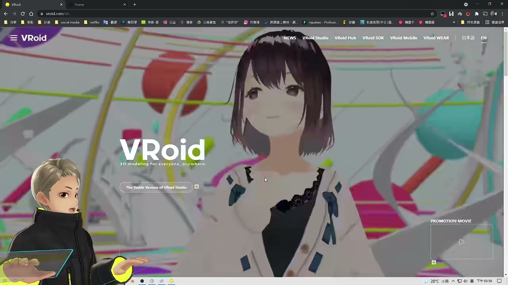
口播先 Google「VRoid」，进官网。导航上有 NEWS、VRoid Studio、VRoid Hub、VRoid SDK、VRoid Mobile、VRoid WEAR。口播说刚才有三个官方角色在动，可以免费下载试玩；这一帧已经推到其中一个短发角色脸上。口播要点上面的 VRoid Studio，Windows 就下 Windows。下载和安装没有停在画面上，下一段已经是打开后的模型列表。
点新規作成
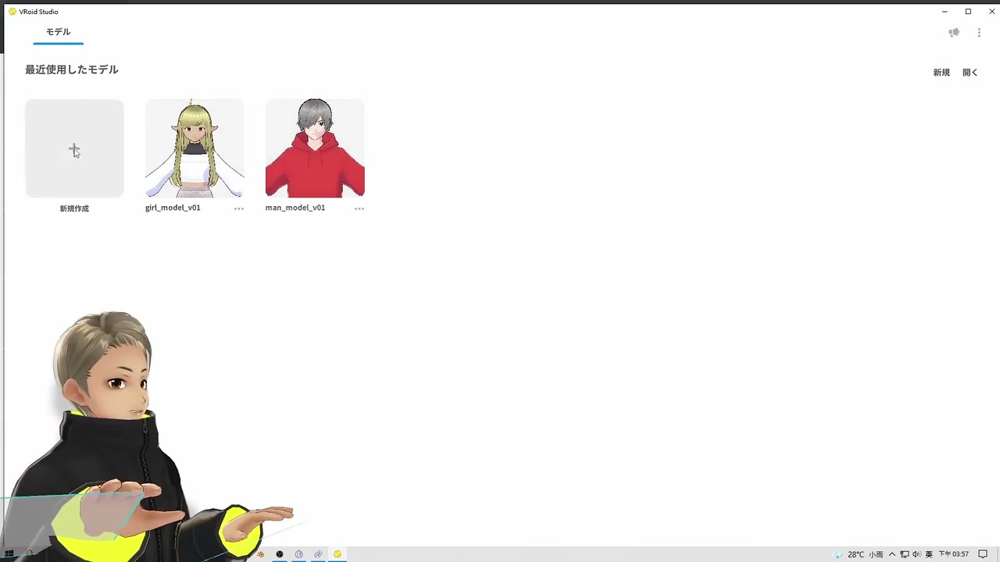
列表里已经有 girl_model_v01 和 man_model_v01。口播说那是他自己以前乱玩的，新用户这里应是空的。光标点在左侧加号上。口播说 新規作成 就是 New。
选女性底模
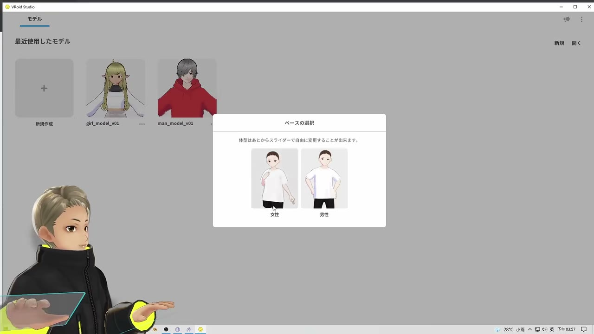
窗口写着体型之后还能用滑杆改。口播选女的，光标停在 女性。接着会闪过「ロード中です。しばらくお待ちください」，然后进入编辑。
改成英文和深色底
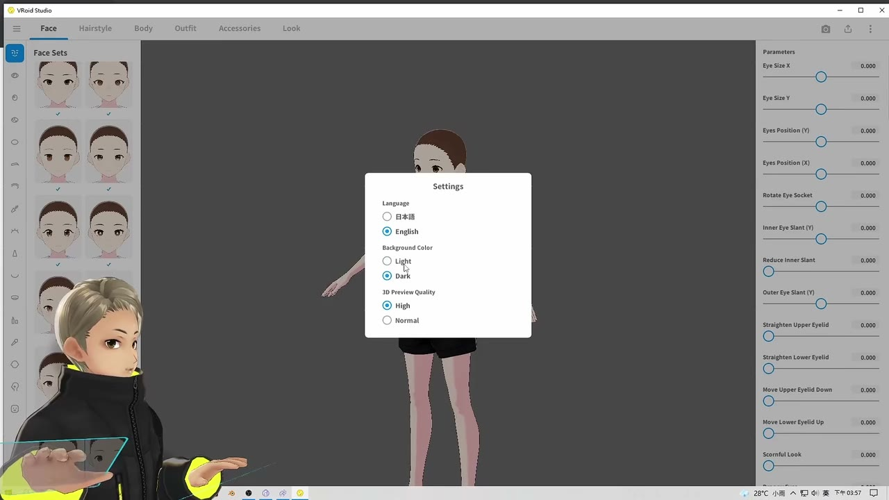
首页是日文，进编辑后从右上角打开设置。口播说目前只有日文和英文。白底太亮，他改成 Dark，方便看轮廓。预览质量停在 High，Normal 没选。光标在 Dark 上。
转、移、缩放
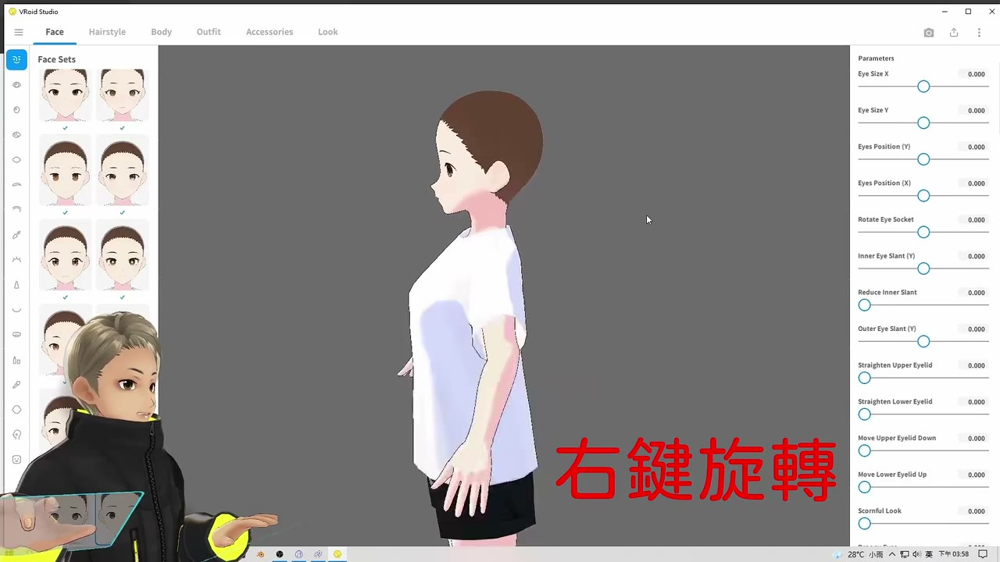
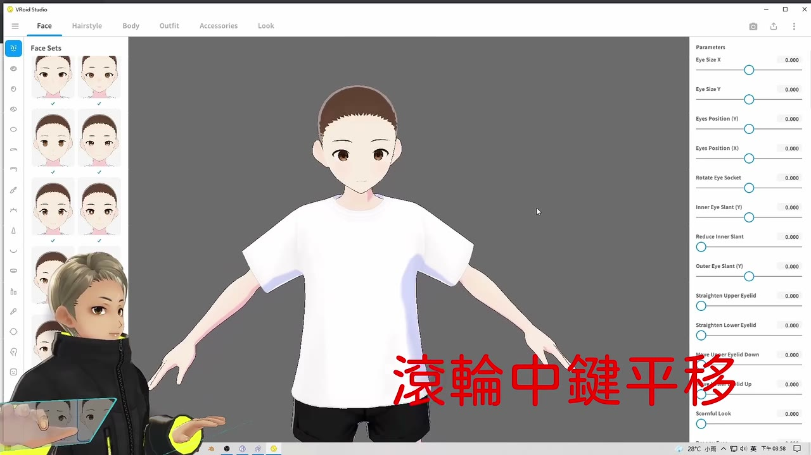
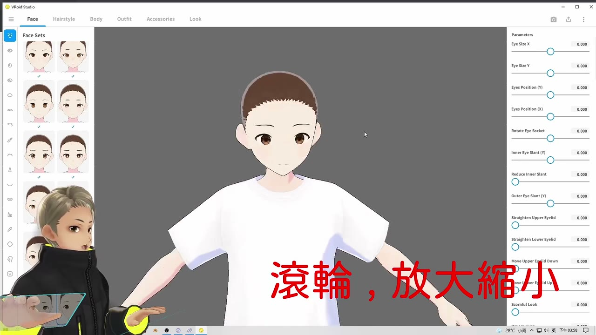
视窗操作写在红字上：右键旋转，按住滚轮中键平移，滚动滚轮放大缩小。口播补了一句，中键不好按的话，Shift 加左键也能平移。画面上没有这句。此时人还是白 T 恤、黑短裤、短发，眼睛滑杆全是 0.000。
先把线和影子调到能看清
四条外框一起加粗
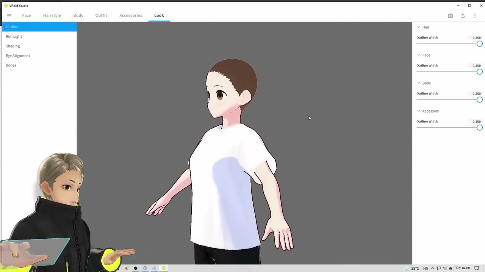
口播习惯先到 Look，把描边拉粗，方便看 2D 风格的轮廓。这一帧四条都停在 0.250。左侧还能看到 Rim Light、Shading、Eye Alignment、Bones，这一下没点。口播说做完可以再调细，后面没有回到这四条。
把阴影拉硬
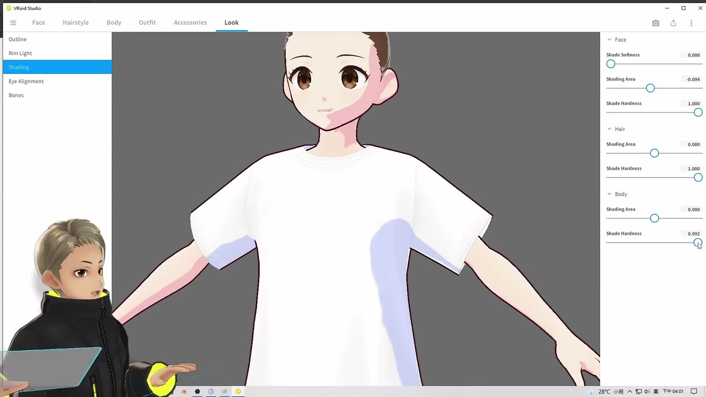
口播说远看鼻子只是一个点，所以先动脸的影子。Shade Hardness 往右是硬边卡通，往左边缘会晕开、更写实。口播想用大约 0.8 做折中。这一帧脸的硬度已经在最右，读数 1.000，身体是 0.992，鼠标还按在身体那条上，不是停住的最终值。柔软度三条能看见的都是 0.000。
脸
拉眼睛
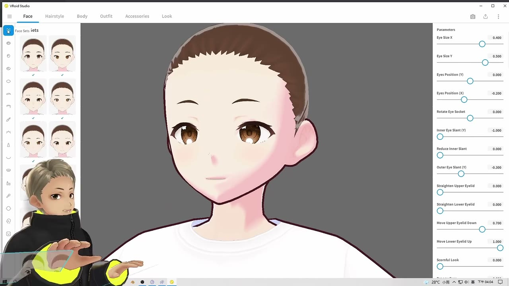
口播说左边是各部位的预设，点一下就知道是什么；右边是细滑杆，看不懂就拉一拉。日文汉字多，看英文吃力可以改回日文。这一帧读数是 Eye Size X 0.400、Eye Size Y 0.500、Eyes Position (Y) 0.000、Eyes Position (X) -0.200、Rotate Eye Socket 0.000、Inner Eye Slant (Y) -1.000、Reduce Inner Slant 0.000、Outer Eye Slant (Y) -0.300、Straighten Upper Eyelid 0.000、Straighten Lower Eyelid 0.000、Move Upper Eyelid Down 0.700、Move Lower Eyelid Up 1.000、Scornful Look 0.000。眼睛又大又往下压。口播还在翻脸型预设，想要比较成熟的那张，画面上没有标出最终点的是哪一张。
再点一版眼睛预设
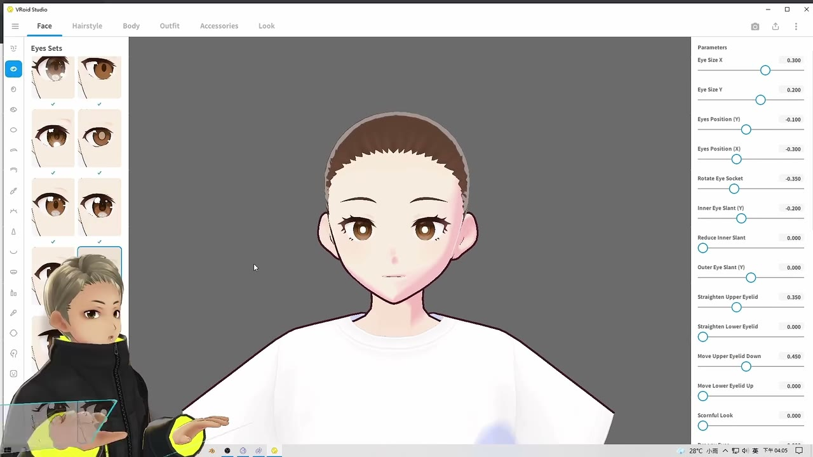
这一帧从脸型切到眼睛预设，读数和上一帧不一样：Eye Size X 0.300、Eye Size Y 0.200、Eyes Position (Y) -0.100、Eyes Position (X) -0.300、Rotate Eye Socket -0.350、Inner Eye Slant (Y) -0.200、Reduce Inner Slant 0.000、Outer Eye Slant (Y) 0.000、Straighten Upper Eyelid 0.350、Straighten Lower Eyelid 0.000、Move Upper Eyelid Down 0.450、Move Lower Eyelid Up 0.000、Scornful Look 0.000。口播说顺着点虹膜、高光、眼白，要「网美灯」那种眼睛，还说先把睫毛关掉才能看清眼线。虹膜色号和 Iris Size 没有停在这一张上。
眉色和眉位
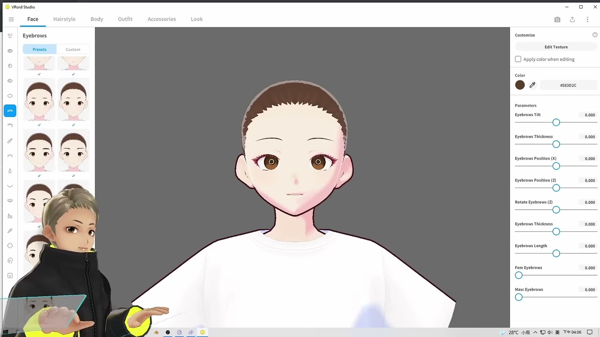
这一帧眉毛滑杆都在 0.000，能看见的是 Eyebrows Tilt、Eyebrows Thickness、Eyebrows Position (X)、Eyebrows Position (Z)、Rotate Eyebrows (Z)、Eyebrows Length、Fem Eyebrows、Masc Eyebrows。眉还没在这一张上收细。Edit Texture 可点。口播后来说眉压太低会和双眼皮打架，要回到这里再分开，那一下没有单独的结果帧。
用生气表情看眉眼会不会撞
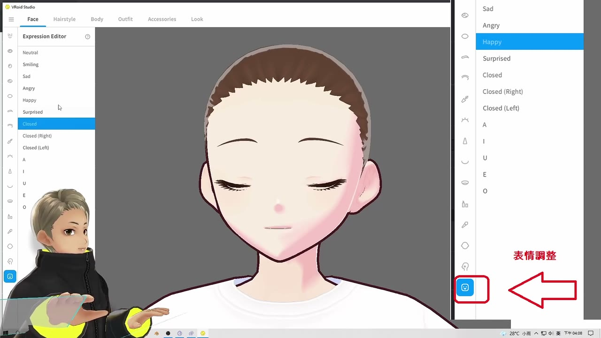
左侧列表能看见 Neutral、Smiling、Sad、Angry、Happy、Surprised、Closed、Closed (Right)、Closed (Left)，下面还有 A、I、U、E、O。这一帧选中的是 Closed，不是 Angry。口播说嘴看不清时用表情把嘴做成开心，或按 O 张开看口腔，再点 CLOSE 合上。鼻子只口播说点过预设。这些都没有停在能读滑杆的一帧。
腮红停在很淡的粉
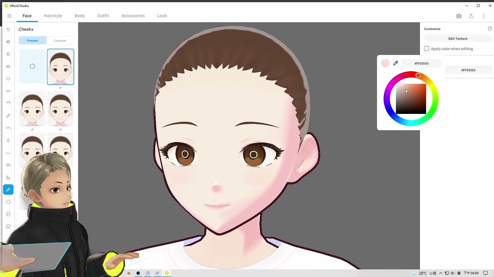
口播说淡腮红几乎看不出差别，所以先改成黑，再吸回脸上的颜色。这一帧已经不是纯黑，取色器停在 #FFDDD0，两颊是很淡的粉。涂成黑的那一屏没有单独留下。
肤色、小耳朵、下巴
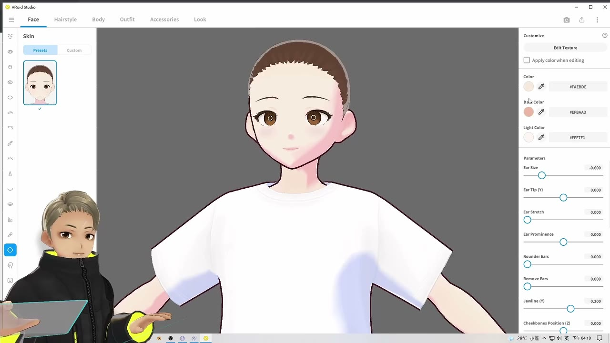
肤色分 Color、Dark Color、Light Color。口播说亮色不改，基本色调得红润一点。这一帧三格是上面的色号。耳朵 Ear Size -0.600，耳朵变小；Ear Tip (Y)、Ear Stretch、Ear Prominence、Rounder Ears、Remove Ears 都是 0.000。Jawline (Y) 0.200，Cheekbones Position (Z) 0.000。口播说耳尖可以拉成精灵耳，也可以在最下面调嘴角、眼角、下巴的脏污和法令纹，他随手点了嘴角那档。那些预设名没有停在能读清的一帧。
表情改回日文再混
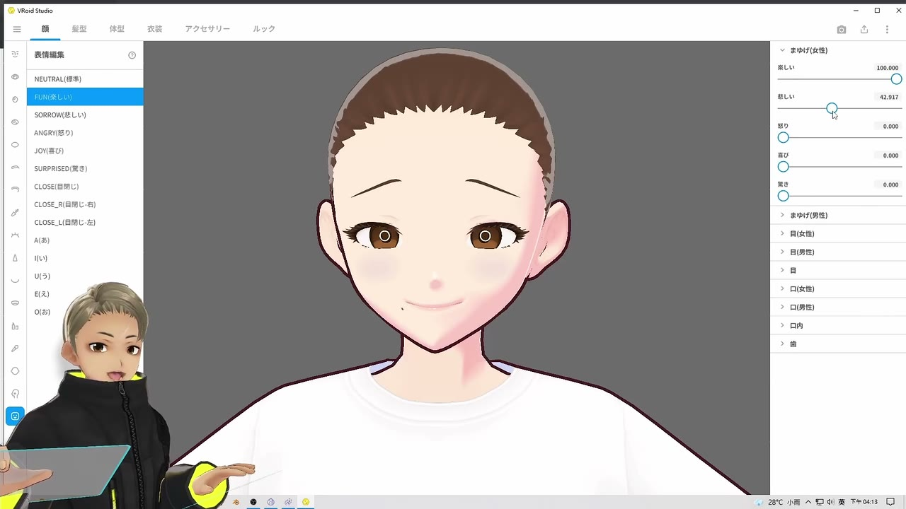
口播说英文不好认，把界面改成日文。这一帧 楽しい 是 100.000，悲しい 是 42.917，怒り、喜び、驚き 都是 0.000。脸在笑，眉已经带一点苦。下面还能看见 まゆげ(男性)、目(女性)、目(男性)、目、口(女性)、口(男性)、口内、歯，都没展开。
体型和衣服
只拉高女体身高
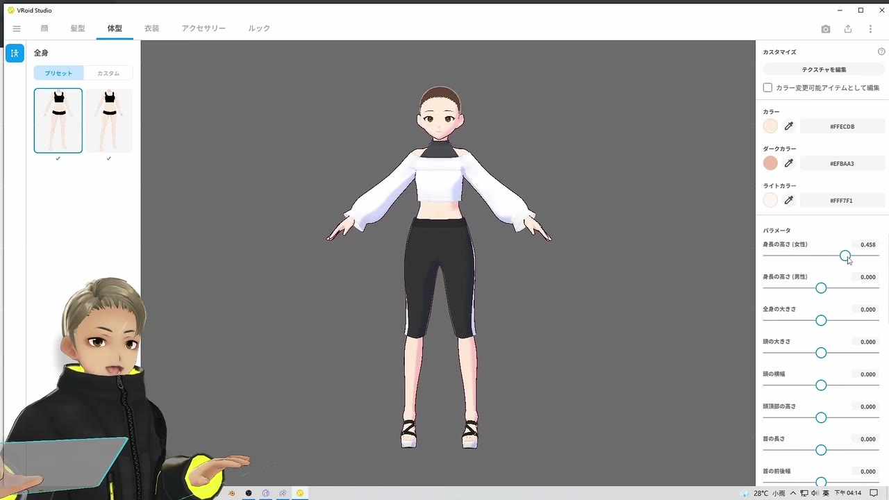
语言已经是日文。身上先换成白短上衣和黑色七分裤，方便看比例。口播说身高会等比例变高。这一帧 身長の高さ（女性）是 0.458，身長の高さ（男性）、全身の大きさ、頭の大きさ、頭の横幅、頭頂部の高さ、首の長さ、首の前後幅 都是 0.000。口播说女生肩膀要收成正三角、再往左收一点，胸是后面的重点；肩和胸在这一屏下面，没有露出来。配件页没有打开。
白短上衣的腰和袖口
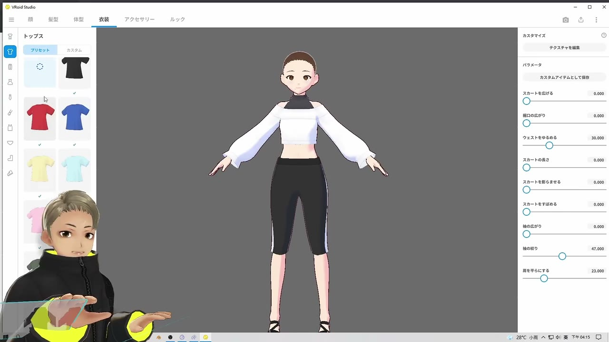
口播为了看身体，曾把上衣换成运动内衣或吊带，再换回衣服。这一帧已经是露肩白短上衣。能读到的非零值是 ウエストをゆるめる 30.00、袖の絞り 47.00、肩を平らにする 23.00。スカートを広げる、裾口の広がり、スカートの長さ、スカートを膨らませる、スカートをすぼめる、袖の広がり 都是 0.000。左侧格子是各色 T 恤。カスタムアイテムとして保存 和 テクスチャを編集 都在，没有点。
换运动外套看身体
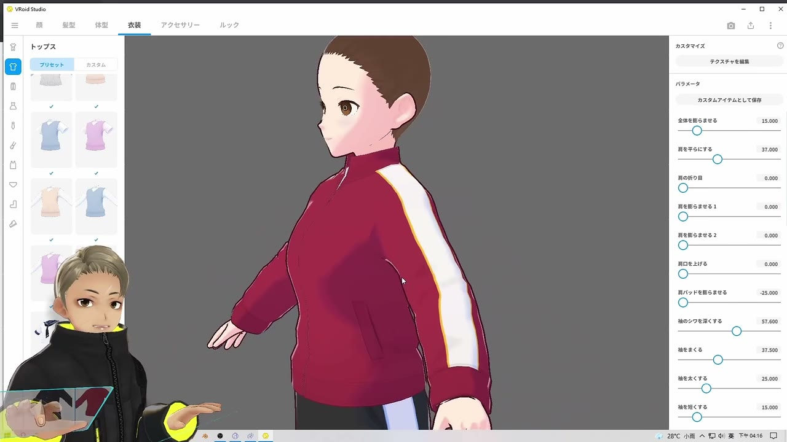
口播说这件运动外套更贴身，看胸和身体比例比较清楚，袖长也能在衣服里调。这一帧能读到的非零值是 全体を膨らませる 15.00、肩を平らにする 37.00、肩パッドを膨らませる -25.00、袖のシワを深くする 57.60、袖をまくる 37.50、袖を太くする 25.00、袖を短くする 15.00。肩の折り目、肩を膨らませる 1、肩を膨らませる 2、肩口を上げる 都是 0.000。口播说形状看完要把「打拳」那种夸张拉回正常，这一帧还没拉回去。
头发
先看头皮的底色
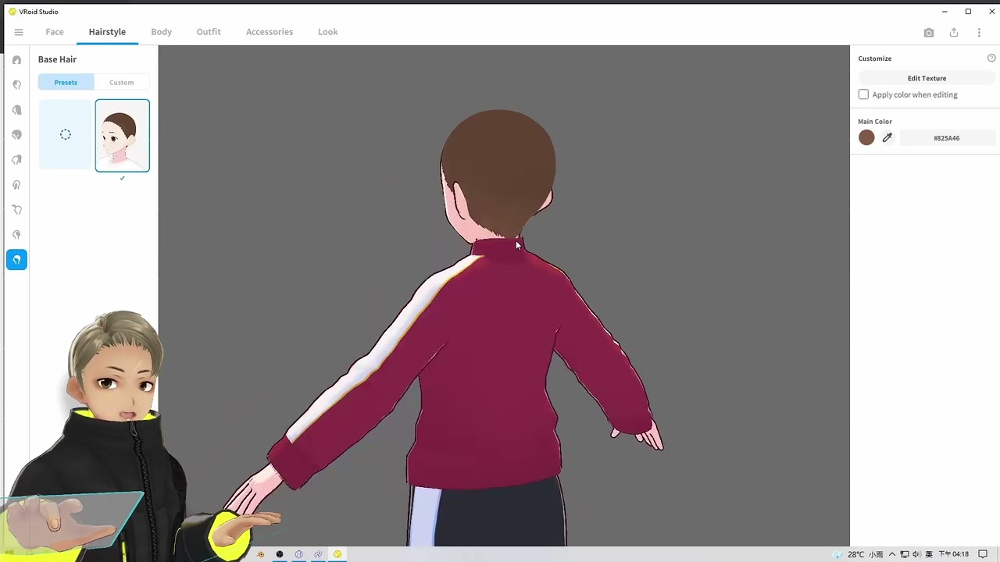
界面又回到英文。口播说头发分成整头、底发（头皮上的一层短发）、前面和后面。这一帧是后面看底发，颜色还是默认深棕 #825A46。口播说改完全头发色后，头皮不会跟着变，要用滴管把底发吸成同一色。吸完的画面没有单独停住。
点一条长发
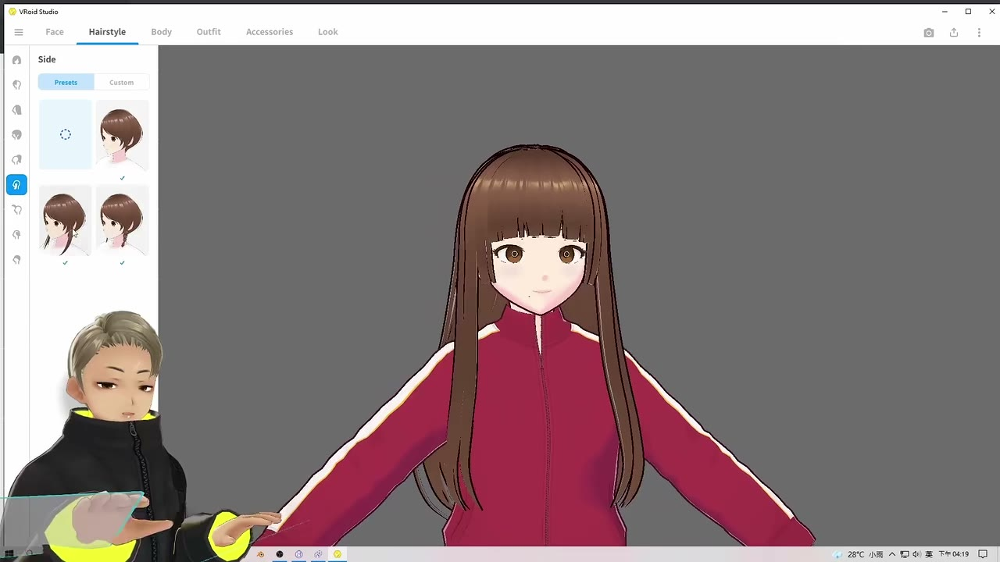
口播在前面、后面之间点预设，提到妹妹头和啾啾。这一帧侧面已经是齐刘海的长直发，发色仍是深棕，衣服还是那件外套。右侧参数被画面裁掉。后面头发会改成浅色，衣服也会再换，不在这一帧。
预览和导出
进摄影棚看站姿
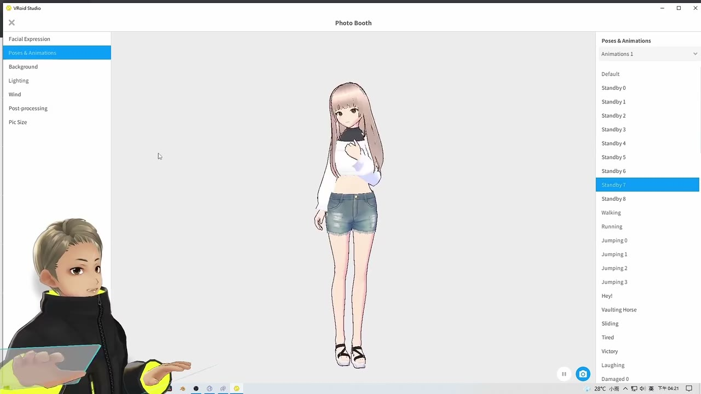
头发这时已是浅色长发，衣服换成白短上衣、黑高领、牛仔短裤和黑凉鞋。口播说点相机是预览。进来时先在 Facial Expression：Blink、Look at Camera、Synch Gaze 勾着，Neutral、Smiling、Sad、Angry、Happy、Surprised 的滑杆都在 0。这一帧切到姿势，人指着自己。口播还点过左边第五项 Wind，说可以改风的角度，滑杆没有停在画面上。口播提醒左上角的叉会关掉软件，看完要从这里退出来，不要当成只关预览。
填 VRM，减面先不动
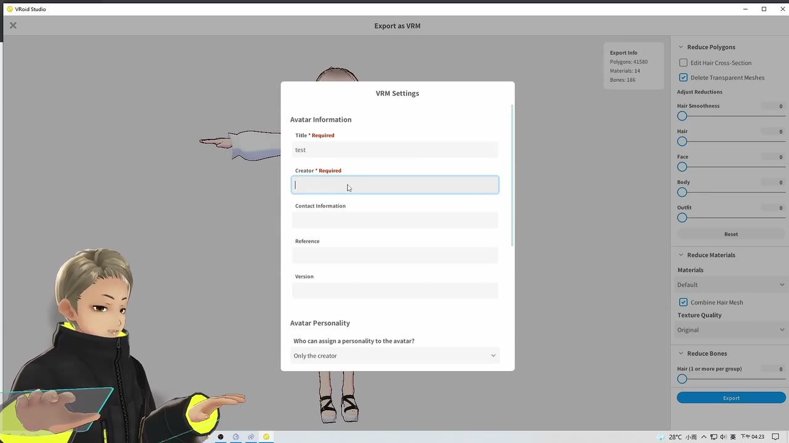
口播从右上角选第一项 Export VRM，说这次只体验，减面都不动。Title 必填，已经写成 test。Creator 必填，这一帧还是空的，光标在框里。口播说名字叫哈哈。Avatar Personality 的下拉是 Only the creator。Delete Transparent Meshes 勾着，Edit Hair Cross-Section 没勾。Hair Smoothness、Hair、Face、Body、Outfit 的减面都是 0。Combine Hair Mesh 勾着，Texture Quality 是 Original，Materials 是 Default。Hair (1 or more per group) 是 0。
使用范围和存档名
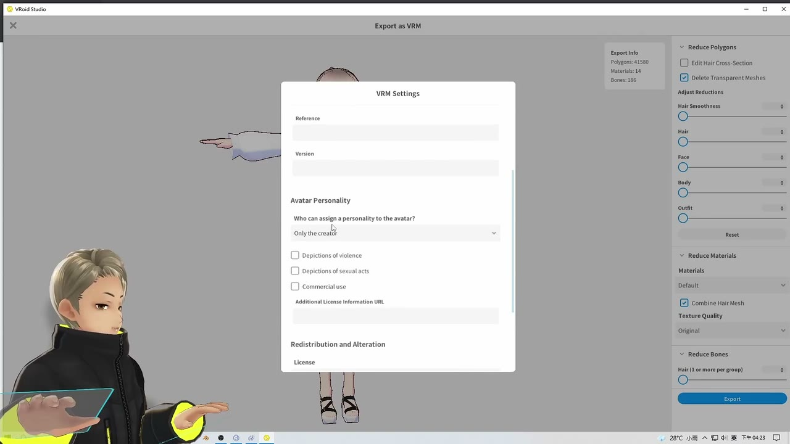
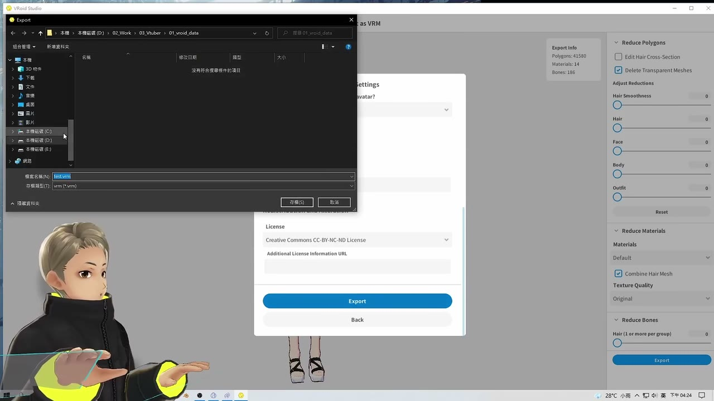
口播说下面可以改授权，想让所有人下载，并允许商用和分享。画面上三项许可都没勾，许可证停在 CC-BY-NC-ND，没有改成商用。存档窗口的路径经过本机磁碟 (D:) 里的 02_Work、03_Vtuber、01_vroid_data，这一页写着没有符合搜索的项目。文件名是 test.vrm，不是口播说的「哈哈」。口播说导出后可以拿去 Blender 做动画。
丢进 VSeeFace
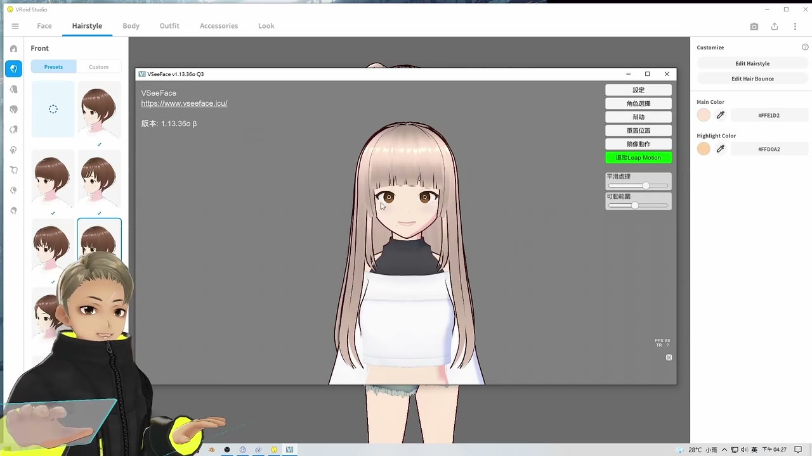
口播说导出的人可以接到虚拟主播软件上。窗口按钮是 設定、角色選擇、幫助、重置位置、鏡像動作，绿色的是 追蹤 Leap Motion，下面还有 平滑處理 和 可動範圍。角色已经在窗口里微笑。右边头发面板仍开着：Main Color #FFE1D2，Highlight Color #FFD0A2，Presets 选中，Custom 没选。口播说每个部位旁边的 Custom 以后可以自己画头发、贴图、把衣服改短袖，这一遍没有做。他又说摄像头现在捕的是左下角那个男生，所以新角色不会跟着他的嘴动。片尾红字是 BYE BYE !!，没有再开菜单。